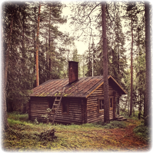
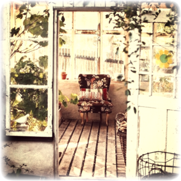
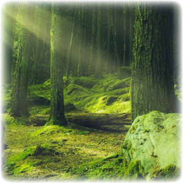
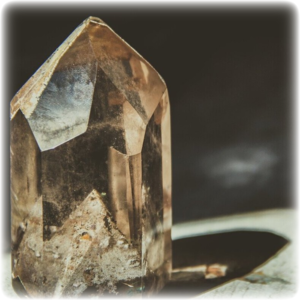
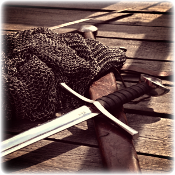
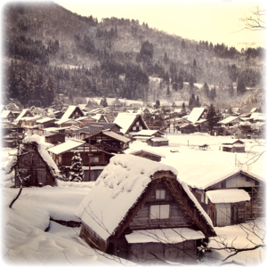

Snippets from The Old Man: Tales of Crystals and Tea
Meeting Vanhempe
"A weathered, but sturdy house - nothing would blow it over, but any sort of new additions would look out of place. The old man working on the ladder (and he seemed, at first glance, like the house's twin), stared Ulko down with the strength of a horse that had weathered many hurricanes."
Meeting Naapuri
"Naapuri shook with such ferver that Ulko feared the tea cups she held would shatter into unrepairable pieces. Nothing of the sort occurred, though - in fact, her quaking appeared almost natural, and the cups used to such a thing. She nodded at Ulko with a crooked half-smile."
Meeting The Critter
"A speaking critter was a marvel alone, but the critter itself was so unpeturbed by Ulko's reaction that Ulko couldn't help but calm himself of his surprise. If the fox-like creature was capable of grinning, it likely would have done so just then, and all at Ulko's expense."
Finding a Crystal
"Warm even through the layer of dirt and moss, Ulko couldn't help but take the crystal and carry it with him. Occasionally he'd peer through its transluscent body at the nature surround the critter's domain. Although nothing of particular interest appeared, it was pretty to look through."
Training with the Old Man
"The sword was so heavy that Ulko could only handle it properly with two hands. Even though their backs were to each other, he could sense Vanhempe's exasperation with his weakness. He'd attempted to explain his life prior to this cabin, but Vanhempe would always brush it off as 'unimportant for the now'."
Exploring the Town
"Although people were out and about in the snowy weather, none were interested in Ulko and Naapuri. On the contrary, they scurried out of Ulko's way if he so much as glanced in any individual's attention. Perhaps it was difficult to comprehend visitors during this time of year, or just another social habit that Ulko didn't understand."
The Origins of This Story
This story began as a creative exercise to try and get through initial issues with my first CIT 110 project - "The Conversation". The characters of Vanhempe and Ulko were featured, but at the time didn't have names. As I continued to work on projects, I added details and characters to flesh out the world and the story. This story is growing in bits and pieces as an exercise in building characters under project constaints and a more significant time limit. In short, the meta for the story is being built first, which is reverse of what would normally occur. You can see the general growth of the narrative through the previous lesson links in the menu.